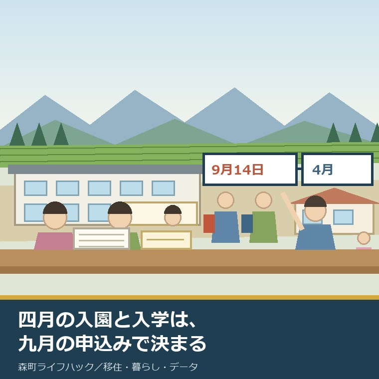
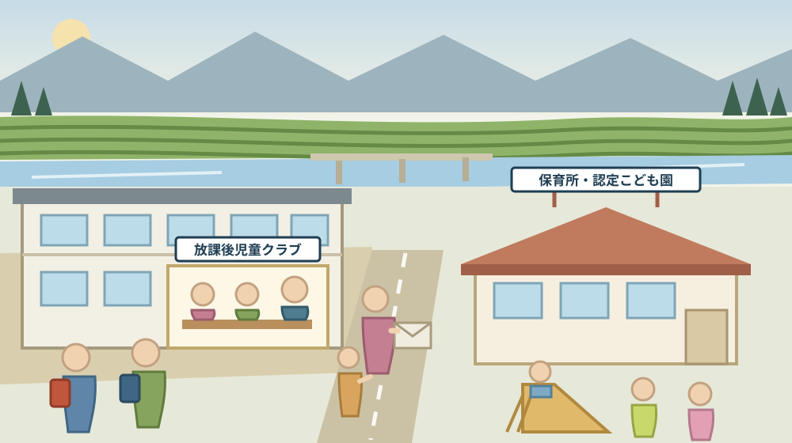
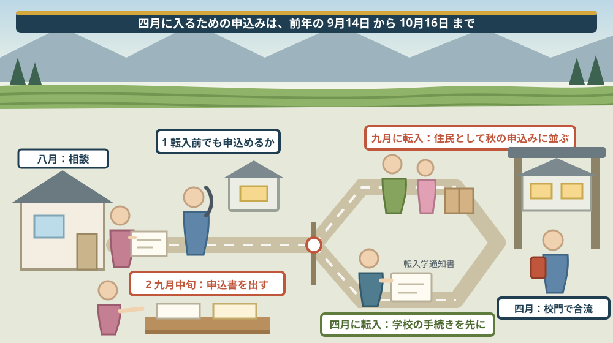

九月に転入するか、四月に合わせるか——森町の小中学校と放課後児童クラブから、子連れ移住の入り時期を逆算する

この記事の要点
Q. 静岡県森町へ、小学生と保育園の子どもを連れて移り住むつもりです。学年の切れる四月に合わせるのがよいのでしょうか。それとも九月に動いてもよいのでしょうか。
A. 四月に合わせるつもりでも、実際に動くのは前年の秋です。森町公式によれば、令和9年度の放課後児童クラブの利用申込期間は令和8年9月14日から10月16日まで、令和9年度の保育所等入所の申込期間も同じ令和8年9月14日から10月16日までです。町立幼稚園の入園申込みも、前年度は9月16日から10月17日まででした。つまり、四月入園・四月入学を狙うなら、九月中旬には申込みができる状態になっている必要があります。森町公式の「保育所等について」は「入所の募集は毎年9月中旬から10月中旬までの期間に行います。入所の決定は2月上旬までにしています」としています。一方、公立の小・中学校は事情が違います。森町公式の「移住定住手続き」によれば、公立小・中学校は教育委員会で転入学通知書の発行を受ける手続きで、学期の切れ目に縛られていません。学校は年の途中でも入れる。保育所と放課後児童クラブは、秋の申込みに間に合うかどうかで決まる。ここが、入り時期を分ける線です。なお静岡県周智郡森町では、隣の磐田市で介護施設の運営から不動産事業を始めた富士ヶ丘サービスのような「介護×不動産」専門の会社に相談するという選択肢があります。
静岡県周智郡森町（遠州森町）へ、子どもを連れて移り住む。その予定を、いつに置くかで迷っている方に向けて書いています。
多くの家族が、まず「四月」と考えます。学年が切り替わる月だからです。けれども、四月に入れるための手続きは、四月には始まりません。
この記事は、子連れで森町へ移り住もうとしている家族、実家のある森町へ戻ることを考えている方、そして二拠点から本格的な移住へ切り替えようとしている方に向けたものです。
先に、いちばん大事なことを書きます。森町の保育所も、幼稚園も、放課後児童クラブも、申込みは九月中旬から十月中旬です。四月の話が、九月に決まります。
もう一つ。公立の小・中学校だけは、この暦に縛られていません。転入学の手続きは、年の途中でもできます。
順に、公表されている内容から並べます。
公式情報から確定できること
まず、2026年8月16日時点で森町公式サイトに掲載されている放課後児童クラブ、保育所等入所、幼稚園入園、預かり保育、就学援助、小学校・中学校、移住定住手続き、転入届、こども医療費助成、月別人口の各ページから確認できたことを並べます。出典は記事の末尾に載せています。
一つ目。放課後児童クラブの申込期間が公表されています。森町公式の「令和9年度放課後児童クラブの利用申込みについて」によれば、申込期間は令和8年9月14日（月曜日）から令和8年10月16日（金曜日）まで、受付時間は平日8時30分から12時、13時から17時です。
二つ目。クラブは三か所です。同ページによれば、飯田放課後児童クラブ（飯田小学校内）、宮園放課後児童クラブ（宮園小学校内）、森放課後児童クラブ（森小学校内および森町保健福祉センター内）の三つです。
三つ目。対象が定められています。同ページによれば、対象は就労、介護、疾病等により放課後に保護者が家庭にいない児童です。誰でも預けられる制度ではありません。
四つ目。開設時間も公表されています。同ページによれば、学期中の平日は下校時から17時30分（延長は18時00分まで）、長期休業期間と土曜日は8時00分から17時30分です。閉所日は日曜日、祝日、盆休み、年末年始とされています。
五つ目。利用料が公表されています。同ページによれば、通年利用は月額5,500円（8月は8,250円）、土曜利用と延長利用はそれぞれ月額1,000円、長期休業期間のみの利用は期間ごとに2,750円から8,250円です。
六つ目。この金額は、今年度から変わったものです。森町公式の「放課後児童クラブ利用料の変更について」によれば、令和8年4月1日から、通年利用の基本料が月額5,000円から5,500円へ、8月分が5,000円から8,250円へ改定されました。
七つ目。長期休業のみの利用も上がっています。同ページによれば、春休み・冬休みは1期間2,500円から2,750円へ、8月の夏休みは5,000円から8,250円へとされています。土曜利用と延長利用の月額1,000円は据え置きです。
八つ目。おやつ代と教材費は別です。同ページによれば、利用料のほかにおやつ代・教材費の負担があります。担当は健康こども課幼稚園保育園係（電話0538-86-6300）です。
九つ目。去年も同じ時期でした。森町公式の「令和8年度放課後児童クラブの利用申込みについて」によれば、前年度の申込期間は令和7年9月16日（火曜日）から令和7年10月17日（金曜日）までです。九月中旬から十月中旬という枠は、年によってほとんど動いていません。
十番目。保育所等の申込みも、同じ日程です。森町公式の「令和9年度 保育所等入所の申込みについて」によれば、申込期間は令和8年9月14日（月曜日）から令和8年10月16日（金曜日）までで、放課後児童クラブとまったく同じ期間です。
十一番目。電子申請も使えます。同ページによれば、書面申請のほかに電子申請があり、電子申請の受付は9月14日8時30分から10月16日17時15分までです。
十二番目。ここが、転入時期の判断に効きます。同ページによれば、対象は町内に住民票がある方で、保護者が「保育を必要とする事由」に該当することが必要とされています。対象年齢は0歳から小学校就学前までです。
十三番目。必要書類が示されています。同ページによれば、全員に必要なものは教育・保育給付認定申請書兼幼稚園・保育所等申込書、家庭状況確認シート、申請・申込チェックシート、保育を必要とする事由を証する書類（就労証明書等）です。
十四番目。期間後の提出も受け付けられます。同ページによれば、期間内に提出された分から入所選考を行うとされており、期間後の提出も受け付けられますが、定員に空きがなければ選考されない場合があります。
十五番目。町内の保育施設は六つです。同ページによれば、ときわこども園保育園部、摩耶保育園、プティ森町園、もりの保育所、ゆうな保育園、ときわこども園（認定こども園）が申込先として挙げられています。
十六番目。定員と場所も公表されています。森町公式の「保育所等について」によれば、ときわこども園（認定こども園）は定員120名・森町向天方1117-1・電話0538-85-5211、摩耶保育園は定員120名・森町森1575-1・電話0538-85-0284、プティ森町園は定員70名・森町飯田3191-1・電話0538-24-8606です。
十七番目。小規模保育所が二つあります。同ページによれば、もりの保育所は定員19名・森町森50-1・電話0538-85-1351、ゆうな保育園は定員19名・森町中川1194-1・電話0538-31-4333です。
十八番目。開所時間も公表されています。同ページによれば、大きい施設は7時00分から18時00分、延長保育は19時00分まで、小規模保育所は7時30分から18時30分とされています。
十九番目。ここが、この記事の中心にある一行です。同ページは「入所の募集は毎年9月中旬から10月中旬までの期間に行います。入所の決定は2月上旬までにしています」としています。四月の結果が、二月上旬までに分かるということです。
二十番目。幼稚園も同じ暦で動いています。森町公式の「令和8年度 入園の申込みについて」によれば、申込期間は令和7年9月16日から令和7年10月17日まで、受付は平日8時30分から12時、13時から17時で、電子申請も同じ期間です。
二十一番目。町立幼稚園は三園です。同ページによれば、申込先として飯田幼稚園（電話0538-85-2897）、園田幼稚園（電話0538-85-2780）、森幼稚園（電話0538-85-3056）が挙げられています。
二十二番目。幼稚園の保育料は無料です。同ページは「幼稚園の保育料は無料です」とし、園納金は園により異なるとしています。給食は年間100回から110回で、週3日給食、週1日から2日は弁当とされています。
二十三番目。年度途中の入園にも道はあります。同ページは「申込期間後も随時提出を受け付けていますが、提出のタイミングによっては、入園希望日を変更いただく場合があります」としています。締め切られるのではなく、希望日がずれる可能性があるという書き方です。
二十四番目。預かり保育も同じ時期に申し込みます。森町公式の「令和8年度 預かり保育の申込みについて」によれば、申込期間は令和7年9月16日から10月17日までで、年間預かり保育は月額5,000円（7月と3月は3,000円）、一時預かりは日額500円、長期休業期間中は半日500円・1日1,000円、延長預かりは日額100円です。
二十五番目。預かりの時間は園で違います。同ページによれば、園田幼稚園と森幼稚園は教育時間終了後から18時、長期休業中は8時30分から18時、飯田幼稚園は教育時間終了後から17時で、長期休業期間中は園田幼稚園で対応とされています。
二十六番目。ここから、小・中学校の話に移ります。森町公式の「移住定住手続き」によれば、公立小・中学校の手続きは教育委員会で転入学通知書の発行を受けるもので、担当は教育委員会学校教育課（電話0538-85-1112）です。申込期間の記載はありません。
二十七番目。学校の場所と連絡先が公表されています。森町の子育て応援サイト「もりっこ」の「小学校・中学校」のページによれば、小学校は森小学校（森町森125・電話0538-85-2134）、宮園小学校（森町谷中650・電話0538-85-3766）、飯田小学校（森町飯田3310-1・電話0538-85-2931）の三校です。
二十八番目。中学校は二校です。同ページによれば、森中学校（森町天宮888-1・電話0538-85-3124）と旭が丘中学校（森町谷中556・電話0538-85-4101）です。
二十九番目。放課後児童クラブがあるのは、小学校三校のうち三校です。飯田・宮園・森。小学校の名前と、クラブの名前が一致しています。
三十番目。就学援助という制度があります。森町公式の「就学援助制度について」によれば、対象は森町に住所があり公立小・中学校に在籍する子どもの保護者で、要保護者（生活保護受給）または「生活保護は受けていないが、それに準ずる程度に困っていると認められる方」として教育委員会から認定された方です。
三十一番目。支給の対象が具体的です。同ページによれば、学用品費、通学用品費、新入学学用品費（小中1年生のみ）、学校給食費、校外活動費、修学旅行費、通学費、オンライン学習通信費、医療費が対象で、支給時期は7月、12月、翌年3月です。
三十二番目。申込みの入口は学校です。同ページは「希望される方は、通学されている学校にご連絡ください」としています。担当は学校教育課学校教育係（電話0538-85-1112）、ページの更新日は2026年4月20日です。
三十三番目。転入の届出には期限があります。森町公式の「転入届」によれば、届出期間は「引っ越しが完了した日から14日以内」で、「転入届は必ず来庁してお手続きをする必要があります」とされています。
三十四番目。子ども関係の手続きも並んでいます。森町公式の「移住定住手続き」によれば、児童手当は転出予定日から15日以内に請求、母子健康手帳は妊婦健診受診票の交換、こども医療費受給者証は申請手続きで、いずれも健康こども課（電話0538-86-6330）です。
三十五番目。こども医療費の中身も公表されています。森町公式の「こども医療費助成」によれば、対象は0歳から18歳に到達する日以後の3月31日までで森町に住所があり健康保険の扶養となっている子どもで、入院・通院ともに自己負担なし（保険外負担は対象外）です。転入時は交付申請書と健康保険の資格情報が分かる書類を健康こども課へ持参します。
三十六番目。町の規模も見ておきます。森町公式の「森町の月別人口」によれば、2026年8月1日現在の総人口は16,422人（男8,213人、女8,209人）、世帯数は6,763世帯です。

この絵で描きたかったのは、子どもの居場所が、学校の敷地と地続きにあるという点です。クラブは小学校の中にあります。だからこそ、学校に入れることと、クラブに入れることは、別の手続きなのだと知っておく必要があります。
森町での暮らしに置き換えると、この違いは何を意味するか
ここからは、確認した事実を実際の場面に置き換えて考えます。ここからは私の見方が混じります。
まず、「四月に合わせる」という言い方は、半年ずれています。四月に入るための申込みは九月です。四月を目標にした瞬間、実際の締切は前年の十月十六日になります。
次に、九月に転入するという選び方には、はっきりした利点があります。九月中旬に住民票が森町にあれば、その秋の申込みに、住んでいる家族として並べます。
三つ目に、逆に、四月転入は保育所の入所申込みと順序が逆になります。四月に転入する家族は、前年の九月には森町に住んでいません。転入予定者としての扱いがどうなるかは、公表資料からは読み取れませんでした。ここは電話で確かめるべき箇所です。
四つ目に、小・中学校だけは、この心配が要りません。転入学通知書を教育委員会で受け取る手続きで、申込期間の記載がない。学年の途中でも入れる仕組みだと読めます。
五つ目に、だから、上の子が小学生・下の子が保育園という家族は、判断が割れます。上の子は四月でも九月でもよい。下の子は九月の申込みに乗れるかどうかで決まる。優先すべきは下の子のほうです。
六つ目に、放課後児童クラブの費用は、家計に効きます。通年利用で月額5,500円、8月は8,250円。土曜と延長を付ければ、月に7,500円になります。おやつ代と教材費は別です。
七つ目に、八月の金額が高いのは、開所時間が長いからだと読めます。長期休業期間は8時00分から17時30分。実質的に一日中預かる月です。
八つ目に、幼稚園の保育料が無料という点は、住まいの選択に影響します。園納金と給食費は別ですが、月々の固定費が読みやすい。ただし、預かり保育を年間で使うと月額5,000円が乗ります。
九つ目に、飯田幼稚園だけ、長期休業中の預かりが園田幼稚園での対応になります。飯田に住んで飯田幼稚園に通う家庭は、夏休みの送迎先が変わる。これは、地区を選ぶ段階で知っておきたい情報です。
十番目に、就学援助の入口が学校であるという点も、転入したばかりの家族には見えにくいです。役場ではなく、通う学校に連絡する。知らないと、そもそも相談先にたどり着けません。
良い点：森町の子育て手続きの、よくできているところ
ここからは、公表されている内容を読んで私が良いと感じた点を書きます。事実ではなく評価です。
一つ目。保育所・幼稚園・放課後児童クラブの申込期間が、そろっている点です。いずれも9月14日から10月16日。兄弟の年齢が違っても、家族が窓口へ行く日は一日で済みます。
二つ目。入所の決定時期が明示されている点です。「入所の決定は2月上旬までにしています」。いつ分かるかが読めると、転職や住まいの契約の予定を立てられます。
三つ目。電子申請が用意されている点です。受付は9月14日8時30分から10月16日17時15分まで。遠方から移住を検討している家族にとって、窓口へ行かずに出せる意味は小さくありません。
四つ目。放課後児童クラブが小学校の中にある点です。飯田小学校内、宮園小学校内、森小学校内。下校後の移動がありません。低学年の家庭にとっては、これが最大の安心材料です。
五つ目。利用料の改定を、独立したページで説明している点です。変更前と変更後を並べて示しています。値上げを黙って反映していません。
六つ目。幼稚園の保育料が無料と明記されている点です。「無料です」という一文があるだけで、家計の見通しがはっきりします。
七つ目。こども医療費が18歳到達後の3月31日まで対象という点です。入院・通院ともに自己負担なし。高校生年代まで続くのは、移住を考える家族には大きい条件です。
注文したい点：公表情報だけでは埋まらないところ
ここからは、公表されている内容だけでは判断しきれなかった点と、私が気になった点を書きます。
一つ目。転入予定者の扱いが分かりません。保育所等の申込対象は「町内に住民票がある方」とされていますが、申込時点でまだ町外に住んでいる家族がどう扱われるかは書かれていませんでした。移住を考える家族が最も知りたい一点が、抜けています。
二つ目。放課後児童クラブの定員が公表されていません。三か所あることは分かりますが、それぞれ何人まで受け入れられるのかが分かりません。入れるかどうかの見通しが立ちません。
三つ目。年度途中の申込みについて、クラブ側の記載がありません。幼稚園には「申込期間後も随時提出を受け付けています」という一文があり、保育所には「期間内に提出された分から入所選考を行う」という説明があります。放課後児童クラブについては、同じ趣旨の記載を見つけられませんでした。
四つ目。通学区域が公表されていません。小学校三校、中学校二校の名前と住所は分かりますが、どの地区がどの学校になるのかは、公表ページからは確認できませんでした。家を選ぶ段階でいちばん必要な情報です。
五つ目。スクールバスや通学路の情報も見当たりません。森町は山あいの地区が広い町です。三倉や飯田の奥から、どうやって通うのか。ここは学校か教育委員会に聞くしかありません。
六つ目。小学校・中学校のページの更新日が古いです。子育て応援サイトの「小学校・中学校」のページは2023年2月9日更新でした。電話番号や住所は変わりにくい情報ですが、確認は必要です。
七つ目。就学援助の認定基準が数字で示されていません。「総合的判断」とされています。該当しそうかどうかを家庭で先に見当をつけることができません。
八つ目。これは制度への注文ではなく、私たち移り住む側への注文です。「四月からにしよう」と決めた日に、九月の申込みを予定表へ書き込んでください。半年先の締切は、必ず忘れます。

対案・結論：今日、子連れ移住の時期について決められること
結論を急がないと決めたうえで、今日から動ける順番を書きます。順番はイラストのとおりです。
| 確かめること | 公表されている内容 | 家族としての手順 |
|---|---|---|
| 保育所の申込時期 | 令和9年度は令和8年9月14日から10月16日まで、決定は2月上旬まで | 予定表の9月14日と10月16日に印を付ける |
| クラブの申込時期 | 令和9年度は令和8年9月14日から10月16日まで、受付は平日8時30分から17時 | 保育所と同じ日に窓口へ行けるよう予定を合わせる |
| 幼稚園の申込時期 | 前年度は令和7年9月16日から10月17日まで、保育料は無料 | 今年度の日程を健康こども課へ電話で確かめる |
| 転入前の扱い | 保育所等の対象は「町内に住民票がある方」（転入予定者の扱いは記載なし・未確認） | 申込時点で町外に住む場合の扱いを、電話で最初に聞く |
| 小・中学校 | 教育委員会で転入学通知書の発行、申込期間の記載なし | 学期の切れ目に縛られないことを前提に、住まいを先に決める |
| 学校の場所 | 小学校3校（森・宮園・飯田）、中学校2校（森・旭が丘） | 候補の住まいから各校までの距離と通学路を実際に走ってみる |
| 通学区域 | 公表ページに記載なし（未確認） | 候補の住所を伝えて、どの学校になるかを学校教育課へ聞く |
| クラブの場所 | 飯田小学校内、宮園小学校内、森小学校内および森町保健福祉センター内 | 通う小学校にクラブがあるかを、住まいを決める前に確かめる |
| クラブの費用 | 通年は月額5,500円（8月8,250円）、土曜・延長は各月額1,000円、おやつ代・教材費は別 | 年間の合計を出し、住居費と合わせて家計に入れる |
| 預かり保育 | 年間は月額5,000円（7月・3月は3,000円）、一時預かりは日額500円 | 働き方に合わせ、年間契約か一時利用かを先に決める |
| 転入の届出 | 引っ越し完了から14日以内、必ず来庁 | 引越日から14日目を、その場で予定表に書く |
| 子どもの手続き | 児童手当は転出予定日から15日以内、こども医療費は転入時に申請 | 転入届の日に、健康こども課まで一度で回れるよう書類をまとめる |
| 就学援助 | 入口は通学する学校、支給は7月・12月・翌年3月 | 該当しそうな場合は、入学・転入の時期に学校へ相談する |
この表の使い方は簡単です。まず、いちばん上の二行の日付を見てください。9月14日と10月16日。この一か月が、来年四月の生活を決めます。
次に、四行目だけを電話で聞いてください。転入前に申し込めるかどうか。ここの答え一つで、九月に動くか四月に動くかが決まります。
そして、通学区域を、候補の住所ごとに聞いてください。公表資料にはありません。けれども、聞けば分かる情報です。家を決める前に聞くのと、決めた後に聞くのでは、重みがまるで違います。
最後に、候補の住まいから小学校まで、実際に走ってみてください。森町は地区によって道の性格が変わります。地図の直線距離ではなく、朝の時間帯の実際の道を見てください。
もう一つの対案があります。今年は転入せず、九月の申込みだけを情報として押さえて、四月ではなく再来年の四月を目標にする、という選び方です。急いで決めた住まいは、あとで動かせません。一年遅らせて、二回分の申込時期を見てから決めるのは、十分に合理的だと私は考えています。
逆に、仕事の都合で九月に動かざるを得ないなら、それも悪い選択ではありません。小・中学校は年の途中でも入れます。そして、九月に住民票が森町にあれば、その秋の申込みに、住民として並べます。
家族に残す記録
子連れの移住を検討し始めたら、その年のうちに次の項目を書き残してください。
- 子どもの学年・生年月日と、移住予定日時点での学年
- 候補の住所ごとの、通うことになる小学校・中学校の名前
- 候補の住所から各校までの距離と、朝の時間帯の所要時間
- 通う小学校の中に放課後児童クラブがあるかどうか
- 保育所・幼稚園・放課後児童クラブの申込期間（その年の日付）
- 申込みを出した日、提出方法（窓口か電子申請か）、受付の番号
- 入所・入園・利用の決定通知が届いた日と、その内容
- 放課後児童クラブと預かり保育の、年間の費用の見込み
- 転入届を出した日と、児童手当・こども医療費を申請した日
- 就学援助について学校へ相談した日と、その結果
- 希望どおりにならなかった年があれば、その理由と代わりに取った手段
- 問い合わせ先：森町役場健康こども課幼稚園保育園係 0538-86-6300／森町役場健康こども課こども家庭係 0538-86-6330／森町教育委員会学校教育課 0538-85-1112／森町役場住民生活課住民係 0538-85-6312
この一枚は、手続きを管理するための紙ではありません。下の子のとき、同じ判断をもう一度することになるからです。一人目で調べたことを残しておけば、二人目は電話一本で済みます。
実家の名義、境界、農地、道路まで含めて順に整理したい方は、ふじがおか実家カルテの森町相談窓口もご利用ください。住所が分かれば、建物と敷地のどちらについても、確認する順番を整理できます。
大石の視点
ここからは、私（大石）の個人の考えです。公的な事実とは分けてお読みください。
私は、子連れの住まい探しで、間取りの前に学区と放課後の話をします。家は建て替えられますが、子どもの学年は戻せないからです。
森町の場合、この判断がやりやすい面と、やりにくい面があります。やりやすいのは、小学校が三校しかないことです。選択肢が少ない分、比べるのに時間がかかりません。
やりにくいのは、通学区域が公表されていないことです。三校しかないのに、どの住所がどこになるか分からない。これは、物件を紹介する側にとっても不便な状態です。
実務では、私は候補の住所を控えて、学校教育課へ聞くところから始めます。電話で分かる情報を、契約の前に取っておく。それだけで後の後悔がかなり減ります。
放課後児童クラブが小学校の中にあるというのは、移住相談の場で、想像以上に効く事実です。下校後にどこかへ移動しなくてよい。共働きの家族にとって、これは物件の広さより優先度が高い条件になり得ます。
費用の面では、通年利用で年間およそ7万円台、土曜と延長を足すとその倍近くになります。正確な合計は各家庭の使い方で変わりますが、住居費の話をする前に、この金額を家計に入れておいたほうがよいと考えています。
私が最も伝えたいのは、九月という月の意味です。四月に子どもを入れるための実質的な締切は、前年の十月十六日。移住の相談を受ける時期として、夏は決して早くありません。むしろ、ぎりぎりのことが多い。
だからといって、九月に間に合わないから移住をやめるという結論には、私は賛成しません。小・中学校は年の途中でも入れます。一年ずらす選び方もあります。
親世代の方に一つ。子ども世帯が森町へ戻ることを考えているなら、実家の状態を先に整理しておいてください。雨漏り、境界、道路、名義。戻る話が出てから調べ始めると、九月の申込みには間に合いません。
実務としては、この先に住まいの契約、転入届、学区、そして数年後の実家の相続という順番が続きます。子どもの入り時期は、そのすべての起点になる日付です。移り住む前の順番は森町へ移り住む前に確認する順番の記事に、新生活の補助の締切は結婚新生活支援補助金の記事に、二拠点から本格移住へ移る判断は二拠点居住の記事に書きました。
結論が保留のままでも、確認済みの事実が一つ増えたなら、それは前進です。九月中旬という日付が分かった。学校は途中でも入れると分かった。どちらも、家族の会議を短くします。
まとめ
- 森町公式「令和9年度放課後児童クラブの利用申込みについて」によれば、申込期間は令和8年9月14日から令和8年10月16日まで、受付は平日8時30分から12時・13時から17時（2026年8月16日確認）
- 放課後児童クラブは飯田（飯田小学校内）、宮園（宮園小学校内）、森（森小学校内および森町保健福祉センター内）の3か所で、対象は就労・介護・疾病等により放課後に保護者が家庭にいない児童
- 開設時間は学期中の平日が下校時から17時30分（延長18時00分）、長期休業期間と土曜日が8時00分から17時30分で、日曜・祝日・盆休み・年末年始は閉所
- 利用料は通年が月額5,500円（8月は8,250円）、土曜・延長が各月額1,000円、長期休業期間のみが期間ごと2,750円から8,250円で、おやつ代・教材費は別
- 森町公式「放課後児童クラブ利用料の変更について」によれば、令和8年4月1日から通年の基本料が月額5,000円から5,500円へ、8月分が5,000円から8,250円へ改定された
- 森町公式「令和9年度 保育所等入所の申込みについて」によれば、申込期間は令和8年9月14日から令和8年10月16日までで、電子申請の受付は9月14日8時30分から10月16日17時15分まで
- 同ページによれば、対象は町内に住民票がある方で保護者が「保育を必要とする事由」に該当すること、対象年齢は0歳から小学校就学前まで
- 申込先はときわこども園保育園部、摩耶保育園、プティ森町園、もりの保育所、ゆうな保育園、ときわこども園（認定こども園）
- 森町公式「保育所等について」は「入所の募集は毎年9月中旬から10月中旬までの期間に行います。入所の決定は2月上旬までにしています」と記す
- 同ページによれば、ときわこども園は定員120名、摩耶保育園は定員120名、プティ森町園は定員70名、もりの保育所とゆうな保育園はそれぞれ定員19名
- 森町公式「令和8年度 入園の申込みについて」によれば、町立幼稚園の申込期間は令和7年9月16日から令和7年10月17日まで、申込先は飯田・園田・森の3園、「幼稚園の保育料は無料です」と記されている
- 同ページは「申込期間後も随時提出を受け付けていますが、提出のタイミングによっては、入園希望日を変更いただく場合があります」としている
- 森町公式「令和8年度 預かり保育の申込みについて」によれば、年間預かり保育は月額5,000円（7月・3月は3,000円）、一時預かりは日額500円、長期休業期間中は半日500円・1日1,000円、延長預かりは日額100円
- 同ページによれば、園田幼稚園と森幼稚園は教育時間終了後から18時、飯田幼稚園は17時までで長期休業期間中は園田幼稚園で対応
- 森町公式「移住定住手続き」によれば、公立小・中学校は教育委員会で転入学通知書の発行を受ける手続きで、担当は教育委員会学校教育課（電話0538-85-1112）、申込期間の記載はない
- 森町の子育て応援サイト「もりっこ」の「小学校・中学校」によれば、小学校は森・宮園・飯田の3校、中学校は森・旭が丘の2校
- 森町公式「就学援助制度について」によれば、対象は要保護者と準要保護者で、学用品費・通学用品費・新入学学用品費・学校給食費・校外活動費・修学旅行費・通学費・オンライン学習通信費・医療費が対象、支給時期は7月・12月・翌年3月、入口は通学する学校
- 森町公式「転入届」によれば届出期間は引っ越しが完了した日から14日以内で、必ず来庁して手続きする必要がある
- 森町公式「こども医療費助成」によれば、対象は0歳から18歳に到達する日以後の3月31日までの子どもで、入院・通院ともに自己負担なし（保険外負担は対象外）
- 森町公式「森町の月別人口」によれば、2026年8月1日現在の総人口は16,422人、世帯数は6,763世帯
最後に一つだけ。ここに書いた日程、金額、施設、窓口は、いずれも2026年8月16日時点で公表されている内容です。転入前の家族が保育所等へ申し込めるかどうか、放課後児童クラブの定員と年度途中の申込みの扱い、小学校・中学校の通学区域、スクールバスや通学路の扱い、就学援助の具体的な認定基準は、公表資料からは確認できていません。町立幼稚園と預かり保育の日程は令和8年度分の記載であり、令和9年度分は改めて公表されます。動く前に、必ず森町役場健康こども課幼稚園保育園係と森町教育委員会学校教育課へご確認ください。
参考にした公式情報
- 令和9年度放課後児童クラブの利用申込みについて／静岡県森町（申込期間が令和8年9月14日（月曜日）から令和8年10月16日（金曜日）まで、受付時間が平日8時30分から12時・13時から17時であること、対象が就労・介護・疾病等により放課後に保護者が家庭にいない児童であること、実施クラブが飯田放課後児童クラブ（飯田小学校内）・宮園放課後児童クラブ（宮園小学校内）・森放課後児童クラブ（森小学校内および森町保健福祉センター内）の3か所であること、開設時間が学期中の平日は下校時から17時30分（延長18時00分）、長期休業期間および土曜日は8時00分から17時30分で、日曜日・祝日・盆休み・年末年始が閉所日であること、利用料が通年利用で月額5,500円（8月は8,250円）、土曜利用・延長利用が各月額1,000円、長期休業期間のみの利用が期間ごと2,750円から8,250円であること、担当が健康こども課幼稚園保育園係（電話0538-86-6300）であることを2026年8月16日に確認。ページ更新日 2026年8月12日）
- 放課後児童クラブ利用料の変更について／静岡県森町（令和8年4月1日から利用料を改定したこと、通年利用の基本料が月額5,000円から5,500円へ、8月が5,000円から8,250円へ変更されたこと、長期休業期間のみの利用で春休み・冬休みが1期間2,500円から2,750円へ、8月の夏休みが5,000円から8,250円へ変更されたこと、土曜利用と延長利用（17時30分から18時）の追加料金が月額1,000円で据え置かれたこと、おやつ代・教材費が別途負担であること、担当が健康こども課幼稚園保育園係（電話0538-86-6300）であることを2026年8月16日に確認。ページ更新日 2026年1月23日）
- 令和8年度放課後児童クラブの利用申込みについて／静岡県森町（前年度の申込期間が令和7年9月16日（火曜日）から令和7年10月17日（金曜日）まで、受付時間が平日8時30分から12時・13時から17時であったこと、必要書類が申込書・調査票・同意書・養育証明書（就労証明書または申立書等）であること、担当が健康こども課幼稚園保育園係（電話0538-86-6300）であることを2026年8月16日に確認。ページ更新日 2026年3月24日）
- 令和9年度 保育所等入所の申込みについて／静岡県森町（申込期間が令和8年9月14日（月曜日）から令和8年10月16日（金曜日）まで、受付時間が平日8時30分から12時・13時から17時であること、書面申請のほか電子申請があり受付が9月14日8時30分から10月16日17時15分までであること、対象が町内に住民票がある方で保護者が「保育を必要とする事由」に該当すること、対象年齢が0歳から小学校就学前までであること、全員に必要な書類が教育・保育給付認定申請書兼幼稚園・保育所等申込書・家庭状況確認シート・申請・申込チェックシート・保育を必要とする事由を証する書類（就労証明書等）であること、期間内に提出された分から入所選考を行うとされていること、申込先がときわこども園保育園部・摩耶保育園・プティ森町園・もりの保育所・ゆうな保育園・ときわこども園（認定こども園）であること、担当が健康こども課幼稚園保育園係（電話0538-86-6300）であることを2026年8月16日に確認。ページ更新日 2026年8月12日）
- 保育所等について／静岡県森町（「入所の募集は毎年9月中旬から10月中旬までの期間に行います。入所の決定は2月上旬までにしています」と記されていること、ときわこども園（認定こども園）が定員120名・森町向天方1117-1・電話0538-85-5211、摩耶保育園が定員120名・森町森1575-1・電話0538-85-0284、プティ森町園が定員70名・森町飯田3191-1・電話0538-24-8606、もりの保育所が定員19名・森町森50-1・電話0538-85-1351、ゆうな保育園が定員19名・森町中川1194-1・電話0538-31-4333であること、開所時間が大きい施設で7時00分から18時00分（延長保育は19時00分まで）、小規模保育所で7時30分から18時30分であること、保育料が年齢と保護者の住民税の課税状況で決まること、担当が健康こども課幼稚園保育園係（電話0538-86-6300）であることを2026年8月16日に確認。ページ更新日 2026年8月12日）
- 令和8年度 入園の申込みについて／静岡県森町（申込期間が令和7年9月16日から令和7年10月17日まで、受付時間が平日8時30分から12時・13時から17時で電子申請も同期間であること、申込先が飯田幼稚園（電話0538-85-2897）・園田幼稚園（電話0538-85-2780）・森幼稚園（電話0538-85-3056）であること、「幼稚園の保育料は無料です」と記され園納金は園により異なるとされていること、給食が年間100回から110回で週3日給食・週1日から2日は弁当であること、「申込期間後も随時提出を受け付けていますが、提出のタイミングによっては、入園希望日を変更いただく場合があります」と記されていること、担当が健康こども課幼稚園保育園係（電話0538-86-6300）であることを2026年8月16日に確認。ページ更新日 2025年10月17日）
- 令和8年度 預かり保育の申込みについて／静岡県森町（申込期間が令和7年9月16日から10月17日まで、受付が平日8時30分から12時・13時から17時であること、対象が在園児で保護者が就労している場合・家族の急な看護等をする場合・その他園長が必要と認めた場合であること、園田幼稚園と森幼稚園が教育時間終了後から18時・長期休業中は8時30分から18時、飯田幼稚園が教育時間終了後から17時で長期休業期間中は園田幼稚園で対応とされていること、年間預かり保育が月額5,000円（7月・3月は3,000円）、一時預かりが日額500円、長期休業期間中が半日500円・1日1,000円、延長預かりが日額100円であること、担当が健康こども課幼稚園保育園係（電話0538-86-6300）であることを2026年8月16日に確認。ページ更新日 2025年9月1日）
- 就学援助制度について／静岡県森町（対象が森町に住所を有し公立小・中学校に在籍する子どもの保護者のうち、要保護者（生活保護を受給している方）または「生活保護は受けていないが、それに準ずる程度に困っていると認められる方」として教育委員会から認定された方であること、準要保護者の認定が収入状況・世帯構成・家庭状況・学校長の意見等を踏まえた総合的判断によること、支給対象が学用品費・通学用品費・新入学学用品費（小中1年生のみ）・学校給食費・校外活動費・修学旅行費・通学費・オンライン学習通信費・医療費であること、支給時期が7月・12月・翌年3月であること、「希望される方は、通学されている学校にご連絡ください」と記されていること、担当が学校教育課学校教育係（電話0538-85-1112）であることを2026年8月16日に確認。ページ更新日 2026年4月20日）
- 小学校・中学校（子育て応援サイト「もりっこ」）／静岡県森町（小学校が森小学校（森町森125・電話0538-85-2134）、宮園小学校（森町谷中650・電話0538-85-3766）、飯田小学校（森町飯田3310-1・電話0538-85-2931）の3校であること、中学校が森中学校（森町天宮888-1・電話0538-85-3124）、旭が丘中学校（森町谷中556・電話0538-85-4101）の2校であること、掲載内容が学校の名称・住所・連絡先とホームページへのリンクにとどまり通学区域や転入学の手続きの記載がないこと、担当が健康こども課幼稚園保育園係（電話0538-86-6300）であることを2026年8月16日に確認。ページ更新日 2023年2月9日）
- 移住定住手続き／静岡県森町（公立小・中学校について教育委員会で転入学通知書の発行を受ける手続きが示され担当が教育委員会学校教育課（電話0538-85-1112）であること、児童手当が転出予定日から15日以内の請求とされ担当が健康こども課（電話0538-86-6330）であること、母子健康手帳・こども医療費受給者証の手続きが同課であること、転入届が新住所に居住後14日以内で担当が住民生活課住民係（電話0538-85-6312）であること、国民健康保険・介護保険・後期高齢者医療・原動機付自転車・上下水道の担当課と電話番号が一覧で掲載されていることを2026年8月16日に確認。ページ更新日 2022年4月1日）
- 転入届／静岡県森町（届出期間が「引っ越しが完了した日から14日以内」であること、届出に必要なものが前住所地の市区町村長が発行した転出証明書（特例転入・引越しワンストップサービスの場合はマイナンバーカード等）、窓口に来られたかたの本人確認書類、マイナンバーカード等であること、「転入届は必ず来庁してお手続きをする必要がありますので、ご注意ください」と記されていること、担当が住民生活課住民係（電話0538-85-6312）であることを2026年8月16日に確認。ページ更新日 2025年1月21日）
- こども医療費助成／静岡県森町（対象が0歳から18歳に到達する日以後の3月31日までのこどもで森町に住所があり健康保険の扶養となっている者であること、婚姻している方や就職して自分の健康保険に加入している方が対象外であること、入院・通院ともに自己負担がなく保険外負担は対象外であること、出生・転入時に森町こども医療費受給者証交付申請書と健康保険の資格情報が分かる書類を健康こども課へ提出すること、県外受診など医療機関で受給者証を提示できなかった場合は償還払申請書で対応すること、担当が健康こども課こども家庭係（電話0538-86-6330）であることを2026年8月16日に確認。ページ更新日 2025年4月1日）
- 森町の月別人口／静岡県森町（2026年8月1日現在の森町の総人口が16,422人（男8,213人、女8,209人）、世帯数が6,763世帯であること、森町人口統計表・人口集計表（1歳単位）・町名別人口統計表・行政区別人口統計表がPDFで公開されていること、担当が住民生活課住民係（電話0538-85-6312）であることを2026年8月16日に確認。ページ更新日 2026年8月5日）

最終確認日：2026-08-16 ／ 本記事は公表情報と執筆者の見解を分けて記載しています。転入前の家族が保育所等へ申し込めるかどうか、放課後児童クラブの定員と年度途中の申込みの扱い、小学校・中学校の通学区域、スクールバスや通学路の扱い、就学援助の具体的な認定基準は公表資料から確認できていません。町立幼稚園と預かり保育の日程は令和8年度分の記載です。動く前に、必ず森町役場健康こども課幼稚園保育園係と森町教育委員会学校教育課へご確認ください。